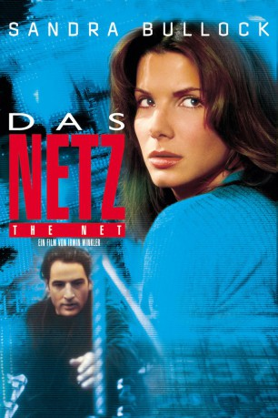

#5030 Das Netz
Alternativ: The Net
 
 IMDB-Wertung: 5.8 / 10
IMDB-Wertung: 5.8 / 10  Metascore: 0
Metascore: 0 
Die Computerexpertin Angela Bennett ist ein isoliert lebender Mensch, die ihre Pizza über das Internet bestellt und kaum Kontakt zu den Nachbarn hat. Die einzige soziale Bezugsperson ist ihre an Alzheimer erkrankte Mutter, die aber aufgrund der Krankheit ihre Tochter nicht wiedererkennen kann. Sie arbeitet bei der Softwarefirma Cathedral von zu Hause aus, so dass sie ihre Arbeitskollegen nur über das Internet oder Telefon kennt. Eines Tages erhält sie von einem Kollegen eine mysteriöse Diskette zugespielt, mit deren Hilfe sie sich plötzlich auf Internetseiten mit geheimen Informationen wiederfindet. Kurz darauf stirbt ihr Kollege bei einem Flugzeugabsturz.Ein Killer wird auf sie angesetzt, der sich bei ihr einschmeichelt, um zunächst die Diskette mit dem geheimnisvollen Programm zu vernichten.
Jahr: 1995
Dauer: 114 Minuten
FSK: 12
Land: USA Studio: Columbia PicturesTonspuren: DD5.1 - ,
Untertitel: Deutsch,
Auflösung: 1080p (1920x1040) Größe: 8960 MB
Genre: Action, Thriller, Drama, Krimi, Mystery
Regisseur:  Irwin Winkler
Irwin Winkler
Drehbuch: Javier Abad
Soundtrack:
Darsteller:
 Sandra Bullock als Angela Bennett
Sandra Bullock als Angela Bennett Jeremy Northam als Jack Devlin
Jeremy Northam als Jack Devlin Dennis Miller als Dr. Alan Champion
Dennis Miller als Dr. Alan Champion Diane Baker als Mrs. Bennett
Diane Baker als Mrs. Bennett Ken Howard als Bergstrom
Ken Howard als Bergstrom Ray McKinnon als Dale
Ray McKinnon als Dale L. Scott Caldwell als Public Defender
L. Scott Caldwell als Public Defender- Robert Gossett als Ben Phillips
- Kristina Krofft als Nurse #1
 Tony Perez als Mexican Doctor
Tony Perez als Mexican Doctor Christopher Darga als Cop
Christopher Darga als Cop Gerald Berns als Jeff Gregg
Gerald Berns als Jeff Gregg- Tannis Benedict als Elevator Woman
- Vaughn Armstrong als Trooper
 Wren T. Brown als Trooper
Wren T. Brown als Trooper Julia Vera als Mexican Nun
Julia Vera als Mexican Nun- Lewis Dix Jr. als FedEx Man
- Brian E. Frankish als Shuttle Driver
- Lucy Butler als Female Officer
- John Livingston als Computer Technician
 Elaine Corral Kendall als Newscaster
Elaine Corral Kendall als Newscaster Thomas Crawford als Waiter
Thomas Crawford als Waiter- Andrew Amador als Dermot Conley
- Nicole Vigil als Conventioneer , uncredited
- Wendy Gazelle als Imposter
- Daniel Schorr als WNN Anchor
- Juan Garcia als Resort Desk Clerk
- Margo Winkler als Mrs. Raines
- Gene Kirkwood als Stan Whiteman
- Charles Winkler als Cop
- Julia Pearlstein als Nurse #2
- Rick Snyder als Russ Melbourne
- Lynn Blades als Remote Reporter
- Israel Juarbe als Thief
- Lili Flanders als Embassy Worker
- Adam Winkler als Computer Nerd
- Wanda-Lee Evans als Desk Sergeant
- David Winkler als Computer Technician
- Kerry Kilbride als WNN Reporter
- Roland Gomez als Limo Driver
- Melvin Thompson als Fire Official
- Rich Bracco als Fireman
- Cam Brainard als Computer Technician
- Dennis Richmond als Newscaster
- Alfredo López als Guitar Player
- John Cappon als ICU Doctor
- Barbara Abedi als CCU Nurse
- Kevin Brown als The Bunny
- Hope M. Parrish als Security Officer
- Brad Hill als Security Officer
Datei: X:\1995\Netz, Das (1995, FSK12, 1920x1040).mkv seit 21.12.2016
Festplatte: HD 1992-1995
 Es gibt insgesamt 85 Filme in der Gruppe '1995'
Es gibt insgesamt 85 Filme in der Gruppe '1995'